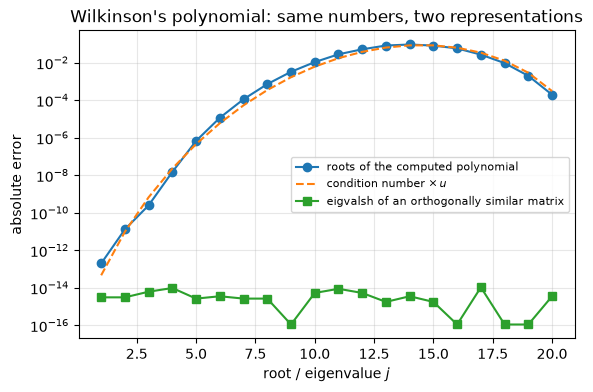
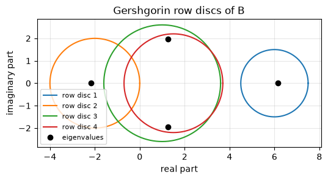
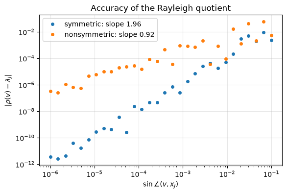
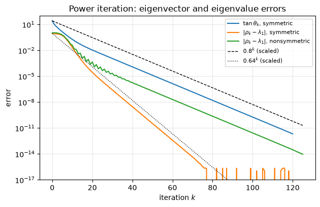
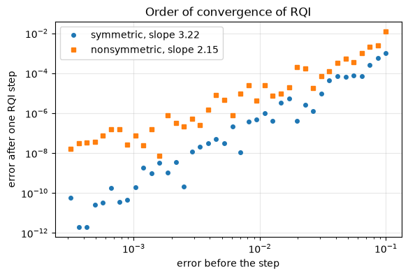
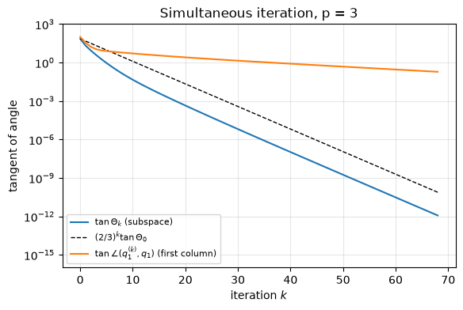

9.15. Lab 9: Eigenvalues: theory and vector iterations#
This notebook accompanies Chapter 9 of the notes. It checks the structural and perturbation theory of the chapter numerically, and it implements and measures the vector iterations: power iteration, inverse iteration, Rayleigh quotient iteration and simultaneous iteration.
Learning objectives. After working through this lab you should be able to
verify computed eigendecompositions through backward errors, and recognize the numerical signature of a defective matrix;
explain with an experiment why the characteristic polynomial is a poor route to eigenvalues, and read eigenvalues correctly from a real Schur form;
use Gershgorin discs, the Bauer–Fike theorem and eigenvalue condition numbers \(1/|y^*x|\) to predict how eigenvalues move under perturbations;
implement power, inverse and Rayleigh quotient iteration with residual-based stopping criteria, and compare their measured convergence with the theory, including the order of convergence;
implement simultaneous iteration and relate it to the QR algorithm of Chapter 10.
Notation: \(u = 2^{-53}\) is the unit roundoff. Perturbation sizes are called \(\delta\). Run the cells in order from a fresh kernel.
import matplotlib.pyplot as plt
import numpy as np
import scipy
import scipy.linalg as sla
rng = np.random.default_rng(20260909)
u = np.finfo(float).eps / 2 # unit roundoff of IEEE double precision, 2**-53
plt.rcParams.update({"figure.figsize": (6.4, 4.0), "axes.grid": True, "grid.alpha": 0.3})
print(f"NumPy {np.__version__}, SciPy {scipy.__version__}; unit roundoff u = {u:.3e}")
def sin_angle(v, x):
"""Sine of the angle between the lines spanned by v and x (real or complex)."""
v = v / np.linalg.norm(v)
x = x / np.linalg.norm(x)
return np.linalg.norm(v - x * np.vdot(x, v))
def tan_angle(v, x):
"""Tangent of the angle between the lines spanned by v and x."""
v = v / np.linalg.norm(v)
x = x / np.linalg.norm(x)
return np.linalg.norm(v - x * np.vdot(x, v)) / abs(np.vdot(x, v))
def symmetric_with_eigenvalues(lam, rng):
"""Return (A, Q) with A = Q diag(lam) Q^T symmetric and Q a random orthogonal matrix."""
n = len(lam)
Q, _ = np.linalg.qr(rng.standard_normal((n, n)))
A = (Q * lam) @ Q.T
return (A + A.T) / 2, Q
NumPy 2.5.3, SciPy 1.18.1; unit roundoff u = 1.110e-16
9.15.1. 1. Eigenpairs, backward errors, and a defective matrix#
A computed eigendecomposition cannot be checked against the exact one, which we do not know. What we can check is the backward error: LAPACK’s symmetric and nonsymmetric eigensolvers are backward stable, so the residual \(AX - X\Lambda\) of the computed factors is a modest multiple of \(nu\|A\|\) (times \(\|X\|\) when \(X\) is not orthogonal).
n = 6
S = rng.standard_normal((n, n))
S = S + S.T # symmetric
G = rng.standard_normal((n, n)) # general
lam_s, Q_s = np.linalg.eigh(S)
lam_g, X_g = np.linalg.eig(G)
res_s = np.linalg.norm(S @ Q_s - Q_s * lam_s, 2) / np.linalg.norm(S, 2)
orth_s = np.linalg.norm(Q_s.T @ Q_s - np.eye(n), 2)
res_g = np.linalg.norm(G @ X_g - X_g * lam_g, 2) / (np.linalg.norm(G, 2) * np.linalg.norm(X_g, 2))
print(f"symmetric: eigenvalues real = {np.isrealobj(lam_s)}, "
f"||SQ - Q Lambda|| / ||S|| = {res_s:.1e}, ||Q^T Q - I|| = {orth_s:.1e}")
print(f"general: {np.sum(np.abs(lam_g.imag) > 0)} of {n} eigenvalues non-real, "
f"||GX - X Lambda|| / (||G|| ||X||) = {res_g:.1e}")
# Backward stability: residuals are O(n u) relative to the data; 100 n u leaves room for the constant.
assert res_s < 100 * n * u and orth_s < 100 * n * u and res_g < 100 * n * u
symmetric: eigenvalues real = True, ||SQ - Q Lambda|| / ||S|| = 7.6e-16, ||Q^T Q - I|| = 8.4e-16
general: 4 of 6 eigenvalues non-real, ||GX - X Lambda|| / (||G|| ||X||) = 1.1e-15
The non-real eigenvalues of a real matrix come in conjugate pairs. Now the
Jordan block \(J_4(2)\) of Example 9.1, which has a single
eigenvector direction. numpy.linalg.eig still returns four “eigenvectors”,
but they are numerically parallel: the matrix \(X\) is singular to working
precision, so no diagonalization exists in any useful sense.
J4 = 2 * np.eye(4) + np.diag(np.ones(3), 1)
lam_J, X_J = np.linalg.eig(J4)
print("eigenvalues of J_4(2):", lam_J.real)
print(f"cond(X) = {np.linalg.cond(X_J):.1e} (1/u = {1 / u:.1e})")
assert np.linalg.cond(X_J) > 1 / u # numerically singular eigenvector matrix
delta = 1e-12
E = rng.standard_normal((4, 4))
E *= delta / np.linalg.norm(E, 2)
lam_JE = np.linalg.eigvals(J4 + E)
print(f"perturbation of norm {delta:.0e} moves the eigenvalue by up to {np.max(np.abs(lam_JE - 2)):.1e}"
f" (delta^(1/4) = {delta ** 0.25:.0e})")
# Pseudospectrum check (Proposition ch09-prop-pseudospectrum): every computed eigenvalue z of J+E is an
# exact eigenvalue of J + E + F with ||F|| = O(u ||J||), so sigma_min(zI - J) <= delta + O(u ||J||).
for z in lam_JE:
smin = np.linalg.svd(z * np.eye(4) - J4, compute_uv=False)[-1]
assert smin <= delta + 100 * u * np.linalg.norm(J4, 2)
assert np.max(np.abs(lam_JE - 2)) > 1e3 * delta # far larger than the perturbation itself
eigenvalues of J_4(2): [2. 2. 2. 2.]
cond(X) = 3.2e+46 (1/u = 9.0e+15)
perturbation of norm 1e-12 moves the eigenvalue by up to 7.7e-04 (delta^(1/4) = 1e-03)
Interpretation. A perturbation of size \(10^{-12}\) moves the fourfold eigenvalue by roughly \(10^{-3}\), in line with the \(\delta^{1/n}\) behavior of Example 9.7. Every perturbed eigenvalue \(z\) also satisfies \(\sigma_{\min}(zI - J) \le \delta\) up to rounding errors of order \(u\|J\|_2\), which is the characterization of the pseudospectrum in Proposition 9.3.
9.15.2. 2. The characteristic polynomial is the wrong route#
We reproduce Example 9.2. numpy.poly forms the
coefficients of \(\prod_{j=1}^{20}(z - j)\) in floating point and numpy.roots
computes the eigenvalues of the companion matrix. The first-order condition
number of the root \(z = j\) with respect to relative changes of the
coefficients is \(\prod_i(j+i)/\prod_{i\ne j}|j-i|\).
true_roots = np.arange(1, 21)
coeffs = np.poly(true_roots)
computed = np.roots(coeffs)
print(f"largest |imaginary part| of the computed roots: {np.max(np.abs(computed.imag)):.1e}")
computed = np.sort(computed.real)
err_poly = np.abs(computed - true_roots)
cond_root = np.array([np.prod([float(j + i) for i in range(1, 21)])
/ np.prod([float(abs(j - i)) for i in range(1, 21) if i != j]) for j in true_roots])
print(f"max error of the roots from the polynomial: {err_poly.max():.3f} (at z = {true_roots[np.argmax(err_poly)]})")
print(f"condition numbers of z = 14, 15: {cond_root[13]:.2e}, {cond_root[14]:.2e}; times u: {cond_root[14] * u:.3f}")
assert np.isclose(cond_root[13], cond_root[14]) and round(cond_root[14] / 1e14, 1) == 7.6
A_w, _ = symmetric_with_eigenvalues(true_roots.astype(float), rng)
err_eig = np.abs(np.linalg.eigvalsh(A_w) - true_roots)
print(f"max error of eigvalsh on Q diag(1..20) Q^T: {err_eig.max():.1e}")
# Weyl + backward stability: errors <= ||E||_2 = O(n u ||A||_2) with ||A||_2 = 20 (forming A adds the same order).
assert err_eig.max() < 100 * 20 * u * 20
assert err_poly.max() > 1e8 * err_eig.max()
fig, ax = plt.subplots()
ax.semilogy(true_roots, np.maximum(err_poly, u), "o-", label="roots of the computed polynomial")
ax.semilogy(true_roots, cond_root * u, "--", label=r"condition number $\times\, u$")
ax.semilogy(true_roots, np.maximum(err_eig, u), "s-", label="eigvalsh of an orthogonally similar matrix")
ax.set_xlabel("root / eigenvalue $j$")
ax.set_ylabel("absolute error")
ax.set_title("Wilkinson's polynomial: same numbers, two representations")
ax.legend(fontsize=8)
plt.show()
largest |imaginary part| of the computed roots: 0.0e+00
max error of the roots from the polynomial: 0.093 (at z = 14)
condition numbers of z = 14, 15: 7.55e+14, 7.55e+14; times u: 0.084
max error of eigvalsh on Q diag(1..20) Q^T: 1.1e-14

Interpretation. The errors of the polynomial route follow the predicted condition number times \(u\), reaching about \(0.09\) near \(z = 14\), while the symmetric eigensolver is accurate to about \(10^{-14}\). The eigenvalues are perfectly conditioned (Weyl’s theorem); the ill-conditioning comes from the choice of the monomial coefficients as the representation.
9.15.3. 3. Schur forms: reading eigenvalues correctly#
scipy.linalg.schur returns the real Schur form by default. Its \(2\times2\)
diagonal blocks carry complex conjugate pairs, and their diagonal entries are
not eigenvalues. The function below extracts the eigenvalues block by block
with the formula from the notes.
def eigvals_from_real_schur(T):
"""Eigenvalues of a real (quasi-triangular) Schur form, reading 1x1 and 2x2 blocks."""
n = T.shape[0]
out, i = [], 0
while i < n:
if i < n - 1 and T[i + 1, i] != 0.0: # 2x2 block
a, b, c, d = T[i, i], T[i, i + 1], T[i + 1, i], T[i + 1, i + 1]
s = np.sqrt(complex(((a - d) / 2) ** 2 + b * c))
out += [(a + d) / 2 + s, (a + d) / 2 - s]
i += 2
else:
out.append(complex(T[i, i]))
i += 1
return np.array(out)
n = 6
A = rng.standard_normal((n, n))
T, Z = sla.schur(A) # real Schur form, A = Z T Z^T
blocks = [i for i in range(n - 1) if T[i + 1, i] != 0.0]
print("2x2 blocks start at rows:", blocks)
assert len(blocks) >= 1, "this example should contain a complex pair"
for i in blocks: # LAPACK's standardized blocks have equal diagonal entries
assert abs(T[i, i] - T[i + 1, i + 1]) <= 4 * u * abs(T[i, i])
lam_ref, VL, VR = sla.eig(A, left=True, right=True)
kappa = 1 / np.abs(np.sum(VL.conj() * VR, axis=0)) # columns are unit vectors
from_T = np.sort_complex(eigvals_from_real_schur(T))
lam_ref = np.sort_complex(lam_ref)
print("diag(T), wrongly read as eigenvalues:", np.round(np.sort(np.diag(T)), 4))
print("eigenvalues from the blocks of T: ", np.round(from_T, 4))
print("scipy.linalg.eigvals: ", np.round(lam_ref, 4))
print(f"||A - Z T Z^T|| / ||A|| = {np.linalg.norm(A - Z @ T @ Z.T, 2) / np.linalg.norm(A, 2):.1e}")
# Both computations are backward stable, so they differ by at most about kappa(lambda) * O(n u ||A||).
assert np.max(np.abs(from_T - lam_ref)) <= 100 * n * u * np.linalg.norm(A, 2) * kappa.max()
assert np.linalg.norm(A - Z @ T @ Z.T, 2) <= 100 * n * u * np.linalg.norm(A, 2)
Tc, Zc = sla.schur(A, output="complex") # complex Schur form: triangular, eigenvalues on the diagonal
assert np.allclose(np.tril(Tc, -1), 0) and np.linalg.norm(A - Zc @ Tc @ Zc.conj().T, 2) <= 100 * n * u * np.linalg.norm(A, 2)
print("diagonal of the complex Schur form: ", np.round(np.sort_complex(np.diag(Tc)), 4))
2x2 blocks start at rows: [0, 4]
diag(T), wrongly read as eigenvalues: [-1.3392 -0.3757 -0.3757 0.1795 1.003 1.003 ]
eigenvalues from the blocks of T: [-1.3392+0.j -0.3757-2.4813j -0.3757+2.4813j 0.1795+0.j
1.003 -1.2685j 1.003 +1.2685j]
scipy.linalg.eigvals: [-1.3392+0.j -0.3757-2.4813j -0.3757+2.4813j 0.1795+0.j
1.003 -1.2685j 1.003 +1.2685j]
||A - Z T Z^T|| / ||A|| = 2.5e-15
diagonal of the complex Schur form: [-1.3392+0.j -0.3757-2.4813j -0.3757+2.4813j 0.1795+0.j
1.003 -1.2685j 1.003 +1.2685j]
The diagonal of the real Schur form repeats the real part of each complex pair
and loses the imaginary part entirely. The block formula, the complex Schur
form and eigvals agree to within the bound predicted by the eigenvalue
condition numbers.
9.15.4. 4. Gershgorin discs#
We check Theorem 9.8 on the \(3\times3\) matrix of Example 9.4 and on the \(4\times4\) matrix of Figure 9.1, including the counting statement for connected groups of discs.
def gershgorin(A):
"""Centers and radii of the row Gershgorin discs."""
c = np.diag(A)
return c, np.abs(A).sum(axis=1) - np.abs(c)
def disc_components(c, r):
"""Group discs into connected components of their union (discs i, j touch if |c_i - c_j| <= r_i + r_j)."""
n = len(c)
label = list(range(n))
for i in range(n):
for j in range(n):
if abs(c[i] - c[j]) <= r[i] + r[j]:
li, lj = label[i], label[j]
label = [li if lab == lj else lab for lab in label]
return [[i for i in range(n) if label[i] == lab] for lab in sorted(set(label))]
A3 = np.array([[5, 1, 0.5], [0.5, 1, 0.5], [1, 0, -3.0]])
B4 = np.array([[6, 1, 0.5, 0], [1, -2, 0.5, 0.5], [0.3, 0.3, 1, -2], [0, 0.2, 2, 1.5]])
for name, M in [("A (3x3)", A3), ("B (4x4)", B4)]:
lam = np.linalg.eigvals(M)
for which, MM in [("rows", M), ("columns", M.T)]:
c, r = gershgorin(MM)
tol = 10 * u * np.linalg.norm(M, 1) # the computed eigenvalues carry errors of order u ||M||
dist = np.abs(lam[:, None] - c[None, :]) - r[None, :]
assert np.all(dist.min(axis=1) <= tol), "every eigenvalue lies in some disc"
comps = disc_components(c, r)
for comp in comps: # a component of k discs holds exactly k eigenvalues
inside = np.sum(np.min(dist[:, comp], axis=1) <= tol)
assert inside == len(comp)
print(f"{name}, {which}: components {comps}; eigenvalues {np.round(lam, 4)}")
A (3x3), rows: components [[0], [1], [2]]; eigenvalues [ 5.1948+0.j -3.0475+0.j 0.8528+0.j]
A (3x3), columns: components [[0], [1], [2]]; eigenvalues [ 5.1948+0.j -3.0475+0.j 0.8528+0.j]
B (4x4), rows: components [[0], [1, 2, 3]]; eigenvalues [ 6.1549+0.j -2.1643+0.j 1.2547+1.9578j 1.2547-1.9578j]
B (4x4), columns: components [[0], [1, 2, 3]]; eigenvalues [ 6.1549+0.j -2.1643+0.j 1.2547+1.9578j 1.2547-1.9578j]
fig, ax = plt.subplots(figsize=(6, 4.5))
t = np.linspace(0, 2 * np.pi, 361)
c, r = gershgorin(B4)
for i in range(4):
ax.plot(c[i] + r[i] * np.cos(t), r[i] * np.sin(t), label=f"row disc {i + 1}")
lam = np.linalg.eigvals(B4)
ax.plot(lam.real, lam.imag, "ko", label="eigenvalues")
ax.set_aspect("equal")
ax.set_xlabel("real part")
ax.set_ylabel("imaginary part")
ax.set_title("Gershgorin row discs of B")
ax.legend(fontsize=8, loc="lower left")
plt.show()

For \(A\) the three discs are disjoint, so each contains one eigenvalue, and because \(A\) is real all three are real. For \(B\) the discs around \(-2\), \(1\) and \(1.5\) form one component containing three eigenvalues, including the complex pair, and the disc around \(6\) contains exactly one.
9.15.5. 5. Bauer–Fike: normal versus non-normal matrices#
Theorem 9.9 bounds the distance from an eigenvalue of \(A + E\) to the spectrum of \(A\) by \(\kappa_2(X)\|E\|_2\). We build a normal matrix \(Q\Lambda Q^*\) and a non-normal matrix \(X\Lambda X^{-1}\) with the same eigenvalues and apply random perturbations of norm \(\delta = 10^{-8}\).
n = 30
lam = rng.standard_normal(n) + 1j * rng.standard_normal(n)
Qc, _ = np.linalg.qr(rng.standard_normal((n, n)) + 1j * rng.standard_normal((n, n)))
A_normal = Qc @ np.diag(lam) @ Qc.conj().T
X = np.triu(rng.standard_normal((n, n)), 1) + np.eye(n) # unit upper triangular: non-orthogonal basis
A_nonnormal = X @ np.diag(lam) @ np.linalg.inv(X)
delta = 1e-8
for name, M, kX in [("normal", A_normal, 1.0), ("non-normal", A_nonnormal, np.linalg.cond(X))]:
worst = 0.0
for _ in range(20):
E = rng.standard_normal((n, n)) + 1j * rng.standard_normal((n, n))
E *= delta / np.linalg.norm(E, 2)
mu = np.linalg.eigvals(M + E)
worst = max(worst, np.max(np.min(np.abs(mu[:, None] - lam[None, :]), axis=1)))
# The computed eigenvalues of M + E are exact for M + E + F with ||F|| = O(n u ||M||), which adds to delta.
bound = kX * (delta + 100 * n * u * np.linalg.norm(M, 2))
print(f"{name:10s}: kappa_2(X) = {kX:9.2e}, max distance = {worst:.2e}, "
f"Bauer-Fike bound = {bound:.2e}, ratio to delta = {worst / delta:.1f}")
assert worst <= bound
normal : kappa_2(X) = 1.00e+00, max distance = 2.84e-09, Bauer-Fike bound = 1.00e-08, ratio to delta = 0.3
non-normal: kappa_2(X) = 4.51e+04, max distance = 9.26e-06, Bauer-Fike bound = 5.09e-04, ratio to delta = 925.6
For the normal matrix no eigenvalue moves by more than \(\delta\). For the non-normal matrix the eigenvalues move by much more than \(\delta\), but by much less than the worst-case factor \(\kappa_2(X)\): the Bauer–Fike bound is guaranteed but pessimistic, because it uses one number for all eigenvalues and all perturbation directions. The individual condition numbers of the next section are sharper.
9.15.6. 6. Condition numbers of individual eigenvalues#
Theorem 9.11 predicts
\(|\lambda(\delta) - \lambda|\approx\delta\,|y^*Ex|/|y^*x|\) for
\(\|E\|_2 = \delta\), with the worst case \(E = \delta\,yx^*\) giving exactly
\(\delta\kappa(\lambda)\). scipy.linalg.eig(A, left=True) returns unit left
and right eigenvectors. We use the Frank matrix, whose small eigenvalues are
famously ill conditioned, and the \(2\times2\) matrix of
Example 9.5.
def frank(n):
"""Frank matrix: F[i, j] = n - max(i, j) (0-based) for j >= i - 1, zero below the subdiagonal."""
i, j = np.indices((n, n))
return np.where(j >= i - 1, n - np.maximum(i, j), 0).astype(float)
def eig_condition(A):
lam, VL, VR = sla.eig(A, left=True, right=True)
kappa = 1 / np.abs(np.sum(VL.conj() * VR, axis=0))
return lam, VL, VR, kappa
A2 = np.array([[1.0, 100.0], [0.0, 2.0]])
print("2x2 example: kappa =", np.round(eig_condition(A2)[3], 4), " sqrt(1 + 100^2) =", round(np.sqrt(1 + 1e4), 4))
F = frank(12)
lam, VL, VR, kappa = eig_condition(F)
order = np.argsort(lam.real)
lam, VL, VR, kappa = lam[order].real, VL[:, order].real, VR[:, order].real, kappa[order]
delta = 1e-12
print(" lambda kappa worst-case change/delta random-E change/delta")
for i in range(len(lam)):
E = delta * np.outer(VL[:, i], VR[:, i]) # worst case E = delta y x^T
change_worst = np.min(np.abs(np.linalg.eigvals(F + E) - lam[i]))
G = rng.standard_normal(F.shape)
G *= delta / np.linalg.norm(G, 2)
change_rand = np.min(np.abs(np.linalg.eigvals(F + G) - lam[i]))
print(f"{lam[i]:9.5f} {kappa[i]:10.3e} {change_worst / delta:14.4e} {change_rand / delta:12.4e}")
# First-order theory: the worst-case change is delta*kappa up to O(delta^2) terms and rounding
# errors of order kappa * u * ||F||, which here are below 10 percent of delta * kappa.
assert abs(change_worst / (delta * kappa[i]) - 1) < 0.1
assert change_rand <= 1.1 * delta * kappa[i] + kappa[i] * 100 * u * np.linalg.norm(F, 2)
2x2 example: kappa = [100.005 100.005] sqrt(1 + 100^2) = 100.005
lambda kappa worst-case change/delta random-E change/delta
0.03103 1.828e+07 1.8319e+07 2.9798e+06
0.04951 3.877e+07 3.8766e+07 4.4159e+06
0.08123 2.665e+07 2.6651e+07 1.3744e+06
0.14365 6.701e+06 6.6967e+06 6.1564e+05
0.28475 5.603e+05 5.6014e+05 6.4009e+04
0.64351 1.447e+04 1.4476e+04 1.9695e+03
1.55399 2.161e+02 2.1558e+02 5.1685e+00
3.51186 6.922e+00 6.9327e+00 4.7340e-01
6.96153 1.711e+00 1.7266e+00 4.2455e-01
12.31108 3.142e+00 3.1548e+00 6.6436e-01
20.19899 4.980e+00 5.0164e+00 9.0949e-01
32.22889 3.287e+00 3.3253e+00 2.6290e-01
The observed worst-case changes match \(\delta\kappa(\lambda)\), and random perturbations of the same norm move each eigenvalue by less. The largest eigenvalues of the Frank matrix have condition numbers of order one; the smallest ones have condition numbers above \(10^7\), so in double precision their computed values carry absolute errors of about \(\kappa(\lambda)\,u\|F\|_2\), that is, only about \(16 - 7 = 9\) correct digits relative to \(\|F\|_2\). This information is invisible in the eigenvalues themselves, which are all real, positive and well separated.
9.15.7. 7. Defective eigenvalues: the \(\delta^{1/n}\) law#
The eigenvalues of \(J_n(0) + \delta e_ne_1^T\) lie on the circle of radius \(\delta^{1/n}\) (Example 9.7). We check this for \(n = 10\), \(\delta = 10^{-10}\), and look at a random perturbation of norm \(u\) of \(J_{16}(0)\).
n, delta = 10, 1e-10
J = np.diag(np.ones(n - 1), 1)
P = J.copy()
P[-1, 0] = delta
radii = np.abs(np.linalg.eigvals(P))
print(f"n = {n}: |eigenvalues| in [{radii.min():.8f}, {radii.max():.8f}], delta^(1/n) = {delta ** (1 / n):.8f}")
# Rounding errors of size u in P shift the eigenvalues by about u / (n delta^((n-1)/n)) ~ 1e-8 here.
assert np.max(np.abs(radii - delta ** (1 / n))) < 1e-6
# Pseudospectrum: ||(zI - J)^{-1}|| >= |z|^{-n}, so sigma_min(0.1 I - J_10) <= 0.1^10.
smin = np.linalg.svd(0.1 * np.eye(n) - J, compute_uv=False)[-1]
print(f"sigma_min(0.1 I - J_10) = {smin:.3e} <= 0.1^10 = {0.1 ** 10:.0e}")
assert smin <= 0.1 ** n + 10 * u
n = 16
J16 = np.diag(np.ones(n - 1), 1)
E = rng.standard_normal((n, n))
E *= u / np.linalg.norm(E, 2)
print(f"J_16 + E with ||E||_2 = u: max |eigenvalue| = {np.max(np.abs(np.linalg.eigvals(J16 + E))):.3f}; "
f"u^(1/16) = {u ** (1 / 16):.4f}")
n = 10: |eigenvalues| in [0.10000000, 0.10000000], delta^(1/n) = 0.10000000
sigma_min(0.1 I - J_10) = 9.900e-11 <= 0.1^10 = 1e-10
J_16 + E with ||E||_2 = u: max |eigenvalue| = 0.091; u^(1/16) = 0.1007
A perturbation at the level of the unit roundoff moves the eigenvalue \(0\) of \(J_{16}(0)\) to a distance comparable to \(u^{1/16}\approx 0.1\). Defective and nearly defective eigenvalues can therefore be computed only to a small fraction of the working precision, whatever the algorithm.
9.15.8. 8. The Rayleigh quotient: quadratic versus linear accuracy#
For a symmetric matrix, Theorem 9.15 gives \(|\rho(v) - \lambda_J|\le(\lambda_{\max}-\lambda_{\min})\sin^2\theta\). For a nonsymmetric matrix only \(\mathcal{O}(\sin\theta)\) can be expected. We perturb an eigenvector by a random direction of size \(t\) and fit the slope of the eigenvalue error against \(\sin\theta\) on a log-log scale.
n = 50
lam50 = np.arange(1.0, n + 1)
A_sym, Q_sym = symmetric_with_eigenvalues(lam50, rng)
X_ns = np.eye(n) + 0.3 * rng.standard_normal((n, n)) / np.sqrt(n)
A_ns = X_ns @ np.diag(lam50) @ np.linalg.inv(X_ns)
J = 24 # eigenvalue 25
ts = np.logspace(-1, -6, 30)
slopes = {}
fig, ax = plt.subplots()
for name, M, x in [("symmetric", A_sym, Q_sym[:, J]), ("nonsymmetric", A_ns, X_ns[:, J] / np.linalg.norm(X_ns[:, J]))]:
s_list, e_list = [], []
for t in ts:
d = rng.standard_normal(n)
d -= x * (x @ d)
v = x + t * d / np.linalg.norm(d)
rho = v @ M @ v / (v @ v)
s_list.append(sin_angle(v, x))
e_list.append(abs(rho - lam50[J]))
if name == "symmetric": # bound of Theorem ch09-thm-rq-quadratic, plus rounding O(n u ||A||)
assert e_list[-1] <= (lam50[-1] - lam50[0]) * s_list[-1] ** 2 + 10 * n * u * lam50[-1]
s_arr, e_arr = np.array(s_list), np.array(e_list)
keep = e_arr > 1e3 * n * u * lam50[-1] # stay above the rounding level
slopes[name] = np.polyfit(np.log(s_arr[keep]), np.log(e_arr[keep]), 1)[0]
ax.loglog(s_arr, e_arr, "o", ms=4, label=f"{name}: slope {slopes[name]:.2f}")
ax.set_xlabel(r"$\sin\angle(v, x_J)$")
ax.set_ylabel(r"$|\rho(v) - \lambda_J|$")
ax.set_title("Accuracy of the Rayleigh quotient")
ax.legend()
plt.show()
print({k: round(v, 3) for k, v in slopes.items()})
assert 1.8 < slopes["symmetric"] < 2.2 and 0.8 < slopes["nonsymmetric"] < 1.2

{'symmetric': np.float64(1.962), 'nonsymmetric': np.float64(0.916)}
9.15.9. 9. Power iteration#
We implement Algorithm 9.1 with the residual stopping criterion \(\|Av - \rho v\|_2\le\mathrm{tol}\,\|A\|_1\) (the 1-norm is a cheap stand-in for the 2-norm). The test matrices have the eigenvalues \(1\), \(0.8\) and 98 further eigenvalues equally spaced in \([-0.7, 0.7]\), as in Figure 9.3; one is symmetric and one is nonsymmetric with the same eigenvalues. Because the eigenpairs are known, we can measure the true errors.
def power_iteration(A, v0, tol=1e-12, maxit=1000):
"""Power iteration with Rayleigh quotient and residual-based stopping.
Returns (rho, v, history) where history holds the iterates, Rayleigh quotients and residual norms.
"""
normA = np.linalg.norm(A, 1)
v = v0 / np.linalg.norm(v0)
hist = {"v": [], "rho": [], "res": []}
for _ in range(maxit):
w = A @ v
rho = np.vdot(v, w) # Rayleigh quotient, since ||v|| = 1
res = np.linalg.norm(w - rho * v)
hist["v"].append(v); hist["rho"].append(rho); hist["res"].append(res)
if res <= tol * normA:
break
v = w / np.linalg.norm(w)
return rho, v, hist
n = 100
lam = np.concatenate([[1.0, 0.8], np.linspace(-0.7, 0.7, n - 2)])
A, Q = symmetric_with_eigenvalues(lam, rng)
X = np.eye(n) + 0.3 * rng.standard_normal((n, n)) / np.sqrt(n)
B = X @ np.diag(lam) @ np.linalg.inv(X)
x1 = X[:, 0] / np.linalg.norm(X[:, 0])
v0 = rng.standard_normal(n)
rho_A, v_A, hA = power_iteration(A, v0, tol=10 * n * u)
rho_B, v_B, hB = power_iteration(B, v0, tol=10 * n * u)
tanA = np.array([tan_angle(v, Q[:, 0]) for v in hA["v"]])
errA = np.abs(np.array(hA["rho"]) - 1)
tanB = np.array([tan_angle(v, x1) for v in hB["v"]])
errB = np.abs(np.array(hB["rho"]) - 1)
print(f"symmetric: {len(tanA)} steps, rho = {rho_A:.15f}, final residual {hA['res'][-1]:.1e}")
print(f"nonsymmetric: {len(tanB)} steps, rho = {rho_B:.15f}, final residual {hB['res'][-1]:.1e}")
def observed_factor(e, lo=1e-11, k0=10):
"""Geometric-mean contraction factor over the steps k >= k0 with e_k above lo."""
idx = [k for k in range(k0, len(e)) if e[k] > lo]
k1, k2 = idx[0], idx[-1]
return (e[k2] / e[k1]) ** (1 / (k2 - k1))
# Early steps contain transients from the other eigenvalues, so the factors are measured over later steps.
fac = {"tan, symmetric": observed_factor(tanA, k0=20),
"eigenvalue, symmetric": observed_factor(errA, lo=1e-13, k0=30),
"tan, nonsymmetric": observed_factor(tanB, k0=20),
"eigenvalue, nonsymmetric": observed_factor(errB, lo=1e-13, k0=30)}
for k, v in fac.items():
print(f"observed factor ({k:25s}) = {v:.4f}")
assert abs(fac["tan, symmetric"] - 0.8) < 0.02 and abs(fac["eigenvalue, symmetric"] - 0.64) < 0.03
assert abs(fac["tan, nonsymmetric"] - 0.8) < 0.02 and abs(fac["eigenvalue, nonsymmetric"] - 0.8) < 0.03
# Theorem ch09-thm-power, checked while the bounds are above the rounding level:
k = np.arange(len(tanA))
bound_tan = tanA[0] * 0.8 ** k
bound_eig = 2 * tanA[0] ** 2 * 0.64 ** k # max_j |lambda_j - lambda_1| = 1.7 <= 2
ok = bound_tan > 1e-10
assert np.all(tanA[ok] <= bound_tan[ok] * (1 + 1e-8))
ok = bound_eig > 1e-12
assert np.all(errA[ok] <= bound_eig[ok] * (1 + 1e-8))
symmetric: 121 steps, rho = 1.000000000000000, final residual 4.3e-13
nonsymmetric: 126 steps, rho = 0.999999999999991, final residual 3.4e-13
observed factor (tan, symmetric ) = 0.7997
observed factor (eigenvalue, symmetric ) = 0.6398
observed factor (tan, nonsymmetric ) = 0.8000
observed factor (eigenvalue, nonsymmetric ) = 0.7972
fig, ax = plt.subplots(figsize=(7, 4.2))
ax.semilogy(tanA, label=r"$\tan\theta_k$, symmetric")
ax.semilogy(errA, label=r"$|\rho_k - \lambda_1|$, symmetric")
ax.semilogy(errB, label=r"$|\rho_k - \lambda_1|$, nonsymmetric")
kk = np.arange(max(len(tanA), len(tanB)))
ax.semilogy(kk, tanA[0] * 0.8 ** kk, "k--", lw=1, label=r"$0.8^k$ (scaled)")
ax.semilogy(kk, errA[0] * 0.64 ** kk, "k:", lw=1, label=r"$0.64^k$ (scaled)")
ax.set_ylim(1e-17, 1e2)
ax.set_xlabel("iteration $k$")
ax.set_ylabel("error")
ax.set_title("Power iteration: eigenvector and eigenvalue errors")
ax.legend(fontsize=8)
plt.show()

Interpretation. For the symmetric matrix the eigenvector error decreases with factor \(|\lambda_2/\lambda_1| = 0.8\) and the Rayleigh quotient error with factor \(0.64 = 0.8^2\), as Theorem 9.16 predicts. For the nonsymmetric matrix with the same eigenvalues the eigenvector still converges with factor \(0.8\), but the eigenvalue error also decreases only like \(0.8^k\), because the Rayleigh quotient is then only linearly accurate. The iteration stops on the residual, not on a comparison with known eigenvalues, so the same code works when the answer is unknown.
Why not plot successive differences? If \(\lambda_1<0\) the iterates flip sign in every step. Their angle to the eigenvector still converges, but \(\|v^{(k)} - v^{(k-1)}\|_2\) tends to \(2\).
_, _, hneg = power_iteration(-A, v0, tol=10 * n * u)
vs = hneg["v"]
print(f"lambda_1 = -1: final angle tan = {tan_angle(vs[-1], Q[:, 0]):.1e}, "
f"final ||v_k - v_(k-1)|| = {np.linalg.norm(vs[-1] - vs[-2]):.6f}")
assert tan_angle(vs[-1], Q[:, 0]) < 1e-10 and np.linalg.norm(vs[-1] - vs[-2]) > 1.99
lambda_1 = -1: final angle tan = 2.1e-12, final ||v_k - v_(k-1)|| = 2.000000
9.15.10. 10. Inverse iteration#
Theorem 9.17 predicts the factor
\(|\mu - \lambda_J|/|\mu - \lambda_K|\), with \(\lambda_J\) the nearest and
\(\lambda_K\) the second nearest eigenvalue to the shift. We factor
\(A - \mu I\) once with scipy.linalg.lu_factor and reuse it.
def inverse_iteration(A, mu, v0, tol=1e-12, maxit=200):
"""Inverse iteration with a fixed shift; one LU factorization, residual-based stopping."""
n = A.shape[0]
normA = np.linalg.norm(A, 1)
lu_piv = sla.lu_factor(A - mu * np.eye(n)) # (2/3) n^3 flops, once
v = v0 / np.linalg.norm(v0)
hist = {"v": [v], "res": []}
for _ in range(maxit):
y = sla.lu_solve(lu_piv, v) # 2 n^2 flops per step
v = y / np.linalg.norm(y)
rho = np.vdot(v, A @ v)
res = np.linalg.norm(A @ v - rho * v)
hist["v"].append(v); hist["res"].append(res)
if res <= tol * normA:
break
return rho, v, hist
print(" mu J-th eigenvalue predicted factor observed factor steps")
for mu in (0.87, 0.95, 0.81):
d = np.abs(lam - mu)
Jn, Kn = np.argsort(d)[:2]
predicted = d[Jn] / d[Kn]
rho, v, h = inverse_iteration(A, mu, v0, tol=10 * n * u)
tans = np.array([tan_angle(w, Q[:, Jn]) for w in h["v"]])
observed = observed_factor(tans, lo=1e-11, k0=3)
print(f"{mu:5.2f} {lam[Jn]:8.3f} {predicted:8.4f} {observed:8.4f} {len(h['res'])}")
assert abs(rho - lam[Jn]) < 100 * n * u # symmetric: |rho - lambda_J| <= residual (Theorem ch09-thm-residual-bound)
assert abs(observed - predicted) < 0.1 * predicted + 0.01
mu J-th eigenvalue predicted factor observed factor steps
0.87 0.800 0.5385 0.5270 44
0.95 1.000 0.3333 0.3244 25
0.81 0.800 0.0909 0.0774 11
The observed factors agree with the predicted ones. A shift close to an eigenvalue gives very fast convergence, at the price of one factorization per shift.
9.15.10.1. The nearly singular solve is harmless#
Now take a shift within \(10^{-12}\) of an eigenvalue. The matrix \(A - \mu I\) has condition number of order \(10^{12}\) or more, and the computed solution \(\hat y\) may have a large relative error. Yet its direction is excellent: Proposition 9.6 bounds the residual of \(\hat v = \hat y/\|\hat y\|_2\) by \(1/\|\hat y\|_2 + \|F\|_2\).
n = 50
A50, Q50 = symmetric_with_eigenvalues(np.arange(1.0, n + 1), rng)
mu = 25 + 1e-12
v = rng.standard_normal(n)
v /= np.linalg.norm(v)
M = A50 - mu * np.eye(n)
y_lu = sla.lu_solve(sla.lu_factor(M), v)
y_sym = sla.solve(M, v, assume_a="sym") # a different backward stable method
v_hat = y_lu / np.linalg.norm(y_lu)
res = np.linalg.norm(A50 @ v_hat - mu * v_hat)
gap = np.min(np.abs(np.delete(np.arange(1.0, n + 1), 24) - mu))
print(f"cond(A - mu I) = {np.linalg.cond(M):.1e}")
print(f"||y_hat|| = {np.linalg.norm(y_lu):.1e}")
print(f"relative difference of two solves = {np.linalg.norm(y_lu - y_sym) / np.linalg.norm(y_sym):.1e}")
print(f"sin angle(y_hat, q_25) = {sin_angle(y_lu, Q50[:, 24]):.1e}")
print(f"residual ||A v - mu v|| = {res:.1e} (1/||y_hat|| = {1 / np.linalg.norm(y_lu):.1e})")
# Proposition ch09-prop-inverse-residual with ||F|| = O(n u ||A||) for a backward stable solve:
assert res <= 1 / np.linalg.norm(y_lu) + 100 * n * u * np.linalg.norm(A50, 2)
# Theorem ch09-thm-sin-theta-vector: sin angle <= residual / gap (gap ~ 1 here).
assert sin_angle(y_lu, Q50[:, 24]) <= res / gap * (1 + 1e-6) + 10 * u
cond(A - mu I) = 2.5e+13
||y_hat|| = 1.9e+11
relative difference of two solves = 3.9e-04
sin angle(y_hat, q_25) = 1.7e-12
residual ||A v - mu v|| = 5.3e-12 (1/||y_hat|| = 5.3e-12)
The two solutions differ by a relative amount far above \(u\) (of the order of \(\kappa(A-\mu I)u\)), but both are huge multiples of nearly the same vector: the error lies almost entirely along \(q_{25}\), which is the direction we want. One step of inverse iteration with this shift already produces an eigenvector whose angle to \(q_{25}\) is of the order of \(|\mu - 25| = 10^{-12}\), exactly as the residual bound predicts.
9.15.11. 11. Rayleigh quotient iteration and its order of convergence#
We implement Algorithm 9.3 with the residual stopping criterion. The history records the Rayleigh quotients, the residual norms and the iterates, so that we can measure the error and estimate the order with \(q_k = \log(e_{k+1}/e_k)/\log(e_k/e_{k-1})\) ((9.19)).
def rqi(A, v0, tol=1e-12, maxit=50):
"""Rayleigh quotient iteration with residual-based stopping; returns (rho, v, history)."""
n = A.shape[0]
normA = np.linalg.norm(A, 1)
v = v0 / np.linalg.norm(v0)
hist = {"v": [], "rho": [], "res": []}
for _ in range(maxit):
rho = np.vdot(v, A @ v)
res = np.linalg.norm(A @ v - rho * v)
hist["v"].append(v); hist["rho"].append(rho); hist["res"].append(res)
if res <= tol * normA:
break
y = np.linalg.solve(A - rho * np.eye(n), v) # a new factorization in every step
v = y / np.linalg.norm(y)
return rho, v, hist
n = 50
J = 24
d = rng.standard_normal(n)
d -= Q_sym[:, J] * (Q_sym[:, J] @ d)
v0 = Q_sym[:, J] + 0.4 * d / np.linalg.norm(d)
rho, v, h = rqi(A_sym, v0, tol=10 * n * u)
Jfound = np.argmin(np.abs(lam50 - rho))
e = np.array([sin_angle(w, Q_sym[:, Jfound]) for w in h["v"]])
print(f"converged to lambda = {rho:.15f} (eigenvalue {lam50[Jfound]:.0f}) in {len(e) - 1} steps")
print(" k residual sin(angle) order estimate")
for k in range(len(e)):
q = np.log(e[k] / e[k - 1]) / np.log(e[k - 1] / e[k - 2]) if 2 <= k and e[k] > 1e3 * u else np.nan
print(f"{k:2d} {h['res'][k]:.2e} {e[k]:.2e} {q:.2f}")
assert abs(rho - lam50[Jfound]) <= h["res"][-1] + 10 * n * u * lam50[-1]
converged to lambda = 25.000000000000007 (eigenvalue 25) in 3 steps
k residual sin(angle) order estimate
0 5.28e+00 3.71e-01 nan
1 2.05e-02 4.93e-03 nan
2 7.39e-08 5.59e-08 2.63
3 1.09e-14 3.87e-15 nan
A single run gives only one or two usable order estimates before the error reaches the rounding level, and they depend on the constant in \(e_{k+1}\approx Ce_k^3\). A more reliable measurement looks at the one-step map: start from many vectors at distance \(e\) from an eigenvector, take one step, and fit \(\log e_{\text{next}}\) against \(\log e\).
def one_step_slope(M, x, ts):
e0, e1 = [], []
for t in ts:
d = rng.standard_normal(len(x))
d -= x * (x @ d)
w = x + t * d / np.linalg.norm(d)
w /= np.linalg.norm(w)
rho = w @ M @ w
y = np.linalg.solve(M - rho * np.eye(len(x)), w)
e0.append(sin_angle(w, x)); e1.append(sin_angle(y, x))
e0, e1 = np.array(e0), np.array(e1)
keep = e1 > 1e-12 # above the rounding level
return np.polyfit(np.log(e0[keep]), np.log(e1[keep]), 1)[0], e0, e1
ts = np.logspace(-3.5, -1, 40)
slope_sym, e0s, e1s = one_step_slope(A_sym, Q_sym[:, J], ts)
slope_ns, e0n, e1n = one_step_slope(A_ns, X_ns[:, J] / np.linalg.norm(X_ns[:, J]), ts)
fig, ax = plt.subplots()
ax.loglog(e0s, e1s, "o", ms=4, label=f"symmetric, slope {slope_sym:.2f}")
ax.loglog(e0n, e1n, "s", ms=4, label=f"nonsymmetric, slope {slope_ns:.2f}")
ax.set_xlabel("error before the step")
ax.set_ylabel("error after one RQI step")
ax.set_title("Order of convergence of RQI")
ax.legend()
plt.show()
print(f"fitted order: symmetric {slope_sym:.2f}, nonsymmetric {slope_ns:.2f}")
assert 2.6 < slope_sym < 3.4 and 1.7 < slope_ns < 2.3

fitted order: symmetric 3.22, nonsymmetric 2.15
Interpretation. For the symmetric matrix the error after one step behaves like the cube of the error before it (Theorem 9.18); for the nonsymmetric matrix like the square, because its Rayleigh quotient is only linearly accurate [Parlett, 1974]. In both cases the iteration stops on the residual, and a final residual of order \(u\|A\|\) means that the computed pair is an exact eigenpair of a matrix within that distance of \(A\) (Proposition 9.4).
9.15.12. 12. Simultaneous iteration#
We implement Algorithm 9.4 for \(p = 3\) on a symmetric matrix with eigenvalues \(1, 0.95, 0.9, 0.6\) and 96 further ones in \([-0.5, 0.5]\). The subspace should converge with factor \(|\lambda_4/\lambda_3| = 2/3\), even though \(|\lambda_2/\lambda_1| = 0.95\) makes power iteration for the first eigenvector slow. The tangent of the largest principal angle is \(\|Q_2^TZ(Q_1^TZ)^{-1}\|_2\), as in the proof of Theorem 9.19.
def subspace_iteration(A, Q0, tol=1e-12, maxit=500):
"""Simultaneous iteration with Rayleigh-Ritz; returns Q, the Ritz values and the history of Q's."""
normA = np.linalg.norm(A, 1)
Z = A @ Q0
history = []
for _ in range(maxit):
Q, _ = np.linalg.qr(Z) # thin Householder QR with explicit Q, about 4 n p^2 flops
Z = A @ Q # 2 n^2 p flops, reused in the next step
Bk = Q.T @ Z # Rayleigh-Ritz matrix
history.append(Q)
if np.linalg.norm(Z - Q @ Bk, "fro") <= tol * normA:
break
return Q, np.sort(np.linalg.eigvalsh((Bk + Bk.T) / 2))[::-1], history
n, p = 100, 3
lam_s = np.concatenate([[1.0, 0.95, 0.9, 0.6], np.linspace(-0.5, 0.5, n - 4)])
A_s, Q_s = symmetric_with_eigenvalues(lam_s, rng)
Q1, Q2 = Q_s[:, :p], Q_s[:, p:]
Q0, _ = np.linalg.qr(rng.standard_normal((n, p)))
Qp, ritz, history = subspace_iteration(A_s, Q0, tol=10 * n * u)
tanTheta = np.array([np.linalg.norm(Q2.T @ Qk @ np.linalg.inv(Q1.T @ Qk), 2) for Qk in [Q0] + history])
col1 = np.array([tan_angle(Qk[:, 0], Q_s[:, 0]) for Qk in [Q0] + history])
print(f"{len(history)} steps; Ritz values {np.round(ritz, 12)}; true {lam_s[:p]}")
print(f"observed subspace factor {observed_factor(tanTheta, lo=1e-11, k0=5):.4f}, predicted {0.6 / 0.9:.4f}")
print(f"final tan angle of the first column to q_1: {col1[-1]:.2e}")
k = np.arange(len(tanTheta))
ok = tanTheta[0] * (2 / 3) ** k > 1e-10
assert np.all(tanTheta[ok] <= tanTheta[0] * (2 / 3) ** k[ok] * (1 + 1e-8)) # Theorem ch09-thm-subspace
assert np.max(np.abs(ritz - lam_s[:p])) < 100 * n * u
fig, ax = plt.subplots()
ax.semilogy(k, tanTheta, label=r"$\tan\Theta_k$ (subspace)")
ax.semilogy(k, tanTheta[0] * (2 / 3) ** k, "k--", lw=1, label=r"$(2/3)^k \tan\Theta_0$")
ax.semilogy(k, col1, label=r"$\tan\angle(q^{(k)}_1, q_1)$ (first column)")
ax.set_ylim(1e-16, 1e3)
ax.set_xlabel("iteration $k$")
ax.set_ylabel("tangent of angle")
ax.set_title("Simultaneous iteration, p = 3")
ax.legend(fontsize=8)
plt.show()
68 steps; Ritz values [1. 0.95 0.9 ]; true [1. 0.95 0.9 ]
observed subspace factor 0.6455, predicted 0.6667
final tan angle of the first column to q_1: 1.91e-01

The subspace converges at the predicted rate (the bound is an upper bound, and the observed factor is slightly smaller). The first column of \(Q^{(k)}\) is exactly the power iteration vector, so it converges only with factor \(0.95\) and is still far from \(q_1\) when the iteration stops. The Rayleigh–Ritz step does not need it: once the subspace is accurate, the eigenvalues of the \(3\times3\) matrix \(Q^{(k)T}AQ^{(k)}\) are accurate, which is why the Ritz values agree with the true eigenvalues to working precision.
Bridge to the QR algorithm. With \(p = n\) and \(Q^{(0)} = I\), the matrices \(Q^{(k)T}AQ^{(k)}\) of simultaneous iteration coincide, up to signs, with the iterates \(A^{(k)} = R^{(k)}Q^{(k)}\) of the unshifted QR algorithm of Chapter 10. We check this for a few steps.
n = 6
A6, _ = symmetric_with_eigenvalues(np.array([6.0, 5.0, 4.0, 3.0, 2.0, 1.0]), rng)
Qk = np.eye(n)
Ak = A6.copy()
for _ in range(5):
Qk, _ = np.linalg.qr(A6 @ Qk) # simultaneous iteration with p = n
Qqr, Rqr = np.linalg.qr(Ak) # unshifted QR algorithm
Ak = Rqr @ Qqr
A_sim = Qk.T @ A6 @ Qk
print("max | |A_sim| - |A_qr| | =", np.max(np.abs(np.abs(A_sim) - np.abs(Ak))))
# Both are orthogonal similarity transforms computed stably; they agree up to diagonal sign changes,
# with differences of order (number of steps) * n u ||A||.
assert np.allclose(np.abs(A_sim), np.abs(Ak), atol=100 * n * u * np.linalg.norm(A6, 2))
max | |A_sim| - |A_qr| | = 2.6645352591003757e-15
9.15.13. Common mistakes#
Reading the diagonal of a real Schur form as the eigenvalues (Section 3).
Computing eigenvalues from the coefficients of the characteristic polynomial (Section 2).
Stopping an iteration by comparing with eigenvalues computed by another program. The comparison presupposes the answer; use the residual, which is the backward error.
Plotting \(\|v^{(k)} - v^{(k-1)}\|\) as “the error”, which hides the true constant and fails completely when \(\lambda_1<0\) (Section 9).
Writing the inverse iteration factor upside down: it is \(|\mu - \lambda_J|/|\mu - \lambda_K|<1\), nearest over second nearest.
Claiming cubic convergence of RQI without measuring it, or expecting it for nonsymmetric matrices (Section 11).
Believing that a tiny residual guarantees an accurate eigenvalue of a non-normal matrix (Sections 6 and 7).
Using
np.random.seed, or reseeding inside a loop. Use onenp.random.default_rnggenerator for the whole notebook.
9.15.14. Your turn#
Compute Gershgorin discs of \(D^{-1}AD\) for a diagonal \(D\) of your choice and find a scaling that isolates each eigenvalue of the matrix \(A\) of Exercise 9.4.
Repeat Section 5 with \(X\) replaced by \(I + sN\) for a strictly upper triangular random \(N\) and \(s = 0.1, 1, 10\). Plot the maximal eigenvalue movement against \(\kappa_2(X)\).
Apply RQI to a normal but nonsymmetric matrix \(Q\Lambda Q^*\) with complex \(\Lambda\) and measure the order (Exercise 9.12).
Implement a two-sided RQI that also iterates on an approximate left eigenvector and uses the shift \(y^*Ax/y^*x\); measure its order on the nonsymmetric matrix of Section 11 (Exercise 9.9).
Use power iteration on \(A^TA\), without forming it, to estimate \(\|A\|_2\) for a \(300\times200\) random matrix, and compare the convergence with \((\sigma_2/\sigma_1)^{2k}\).
9.15.15. Key takeaways#
Eigenvalue solvers are iterative; the characteristic polynomial is a mathematically correct but numerically poor representation.
Normal matrices have perfectly conditioned eigenvalues; for non-normal matrices the condition number \(1/|y^*x|\) of each eigenvalue, and the pseudospectra, show how far eigenvalues can move, and defective eigenvalues move like \(\delta^{1/n}\).
The residual of an approximate eigenpair is its backward error and the right stopping criterion.
Power iteration converges with factor \(|\lambda_2/\lambda_1|\) (squared for the symmetric Rayleigh quotient), inverse iteration with factor \(|\mu-\lambda_J|/|\mu-\lambda_K|\), and RQI cubically for symmetric and quadratically for general matrices; all these rates can be measured.
Simultaneous iteration converges on subspaces and is the unshifted QR algorithm in disguise.
9.15.16. Further reading#
Trefethen and Bau [1997], Lectures 24–28; Golub and Van Loan [2013], Sections 7.1–7.3 and 8.1–8.2; Parlett [1998], Chapter 4, for Rayleigh quotient iteration; Trefethen and Embree [2005] for pseudospectra.